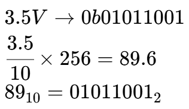
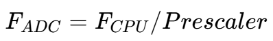

ADC
模数转换计算
对于电压 3.5V，其在模数转换之后的值：

ADC Frequency

Prescaler values: 2, 4, 8, 16, 32, 64 and 128
ADC Multiplexer Selection Register (ADMUX)


ADC Control and Status Register A (ADCSRA)

- Bit 7 – ADEN – ADC Enable
- Bit 6 – ADSC – ADC Start Conversion
- Bits 2:0 – ADPS2:0 – ADC Prescaler Select Bits
| ADPS2 | ADPS1 | ADPS0 | Division Factor |
|---|---|---|---|
| 0 | 0 | 0 | 2 |
| 0 | 0 | 1 | 2 |
| 0 | 1 | 0 | 4 |
| 0 | 1 | 1 | 8 |
| 1 | 0 | 0 | 16 |
| 1 | 0 | 1 | 32 |
| 1 | 1 | 0 | 64 |
| 1 | 1 | 1 | 128 |
ADCSRA = (1<<ADEN)|(1<<ADPS2)|(1<<ADPS1)|(1<<ADPS0);
用例：Prescaler of 128
例程：读取 ADC 中的值
void adc_init() {
ADMUX |= 0b11000000; // internal ref, analog channel 0
ADCSRA = (1<<ADEN)|(1<<ADPS2)|(1<<ADPS1)|(1<<ADPS0);// ADC Enable and prescaler of 128
}
int main(void) {
while (1) {
int val;
ADCSRA |= (1<<ADSC); // start single conversion, write “1” to ADSC
while (ADCSRA & (1<<ADSC)); // wait for conversion to complete
// ADSC becomes “0” again
val= ADC; //read ADC value
}
}